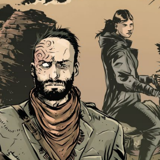

ДостоинстваВ начале игры твой герой получает одно достоинствa из списка, соответствующего роли персонажа. Ты можешь приобретать для своего персонажа новые достоинства, обменивая на них полученный опыт. Для приобретения нового достоинства требуется 5 пунктов опыта. Выбирать можно как из трёх начальных достоинств своего персонажа, так и из перечня общих достоинств, доступных любому мутанту.
Индивидуальные достоинства
Громила
Живой таран
Персонаж может проходить проверку проворства, используя телосложение вместо ловкости.
Зловещий вид
Сея страх в сердце жертвы в результате проверки запугивания, персонаж причиняет на 1 пункт стресса больше, чем обычно.
Железный кулак
Урон от безоружной атаки персонажа равен 2, а не 1, как обычно.
Железячник
Изобретатель
Ты получаешь модификатор +2 при проверке ремесла, но только когда персонаж создаёт новый предмет, а не чинит его.
Водила
Находясь за рулём транспортного средства, персонаж получает модификатор +1 при проверке драки, когда пытается протаранить противника, и при проверке проворства, когда пытается бежать с поля боя. Тот же модификатор действует и при проверке ремесла, когда герой хочет починить или модифицировать транспортное средство.
Монтёр
Ты получаешь модификатор +2 при проверке ремесла, но только когда персонаж чинит предмет, а не создаёт что‑то новое.
Разведчик
Охотник на чудовищ
Персонаж получает модификатор +2 при проверке наблюдательности, когда выслеживает какого‑нибудь зверя.
Знаток Гнили
Персонаж с этим достоинством получает возможность выбрать новый трюк при проверке разведки. Этот трюк позволяет отыскать наименее заражённый Гнилью путь — пока персонаж не покинет сектор, считай, что уровень заражения Гнилью в нём на одну ступень ниже обычного значения.
Мусорщик
Персонаж, который использует это достоинство, получает модификатор +2 при проверке разведки, но в случае успеха обнаруживает не имеющиеся в секторе опасности, а все находящиеся в нём артефакты. Для того чтобы обнаружить ещё и опасности, тебе нужно будет потратить дополнительный ☢, как при выполнении трюка.
Делец
Пройдоха
Используя деловую хватку при заключении трёхсторонней сделки, персонаж может увеличить вдвое любую из выбранных наград.
Мерзавец
Подрывая уверенность оппонента в результате особо удачной проверки влияния, персонаж причиняет на 1 пункт стресса больше, чем обычно.
Шантажист
Выбери одного из важных персонажей ведущего — твой персонаж получает на него по‑настоящему убойный компромат. Природу и суть этого компромата следует обсудить с ведущим. Компромат позволяет тебе использовать этого персонажа в своих интересах, но в этом деле главное не переусердствовать — в некоторых случаях жертве проще избавиться от шантажиста, чем продолжать удовлетворять его растущие аппетиты.
Собачник
Ищейка
Пёс твоего персонажа — отлично натасканный следопыт. Герой получает модификатор +2 при проверке дрессировки, когда его собака кого‑нибудь выслеживает. Это достоинство не теряется, если пёс погибает и персонаж заводит нового.
Бойцовый пёс
Пёс твоего персонажа — смертоносное ручное чудовище. Герой получает модификатор +2 при проверке дрессировки, когда собака дерётся вместо него. Это достоинство не теряется, если пёс погибает и персонаж заводит нового.
Лучший друг мутанта
Пёс способен вытащить героя из любых передряг. При проверках выносливости и проворства твой персонаж может использовать навык дрессировки, а вместо своих характеристик — телосложение и ловкость собаки соответственно. Ты можешь идти на риск как обычно, но повреждения при этом будет получать собака, а пунктов мутации не получит никто. Это достоинство не теряется, если собака погибает и персонаж заводит новую.
Хронист
Костоправ
Персонаж обучен премудростям ампутации конечностей и сшивания плоти — во имя спасения жизней, само собой. Он получает модификатор +2 при проверке лечения, когда работает с травмами. Это не касается ситуаций, когда герой пытается поставить на ноги небоеспособного персонажа.
Заводила
Персонаж получает модификатор +2, когда воодушевляет персонажа, предпринимающего проверку драки или стрельбы.
Артист
Находясь в Ковчеге, один раз за игровую встречу персонаж может выступить перед Народом — рассказать историю у костра, продекламировать поэму или спеть песню. Пройди проверку воодушевления. Каждый полученный в результате ☢ можно обменять на d6 патронов или порций еды. В случае провала обязательно найдётся тот, кому выступление придётся не по вкусу…
Босс
Командир
Персонаж получает модификатор +2 при проверке лидерства, когда приказывает членам своей банды сражаться. Это достоинство не действует в других ситуациях — например, если персонаж отдаёт приказ заняться вымогательством.
Стрелки
У всех членов банды твоего персонажа есть самодельное огнестрельное оружие (пистолеты и винтовки). Пока члены банды находятся в Ковчеге, они сами обеспечивают себя патронами в достаточном (но не избыточном) количестве, а вот во время вылазок в Зону всеми вопросами снабжения придётся заниматься боссу
Вымогатель
Персонаж получает модификатор +2 при проверке лидерства, когда приказывает членам своей банды заняться вымогательством. Это достоинство не действует в других ситуациях — например, если персонаж отдаёт приказ атаковать врага.
Раб
Циник
Когда персонаж получает пункты стресса, при проверке стойкости действует модификатор +2. Во всех остальных случаях это достоинство не работает.
Бунтарь
Каждый ☢, полученный в результате проверки стойкости, дает модификатор +1 во время следующего действия твоего персонажа. Этот модификатор необходимо использовать при первой же возможности — в этом раунде, если персонаж ещё не предпринимал никаких действий, или в следующем, если в этом раунде он уже действовал.
Здоровяк
Когда персонаж получает пункты урона, при проверке стойкости действует модификатор +2. Во всех остальных случаях это достоинство не работает.
Общие достоинства
Антиквар
Персонаж получает модификатор +2, когда проходит проверку понимания, пытаясь определить предназначение артефакта Древних
Археолог
Персонаж получает модификатор +2, когда проходит проверку понимания, пытаясь определить, что представляло собой разрушенное здание или другое найденное в Зоне строение Древних
Аскет
Чтобы не получать урон от голода, персонажу достаточно есть раз в два дня, а не каждый день, как обычно.
Бугай
Персонаж привык таскать тяжести и может носить с собой вдвое больше предметов, чем обычно
Быстрое
выхватывание
выхватывание
Персонаж выхватывает оружие настолько быстро, что ему не нужно использовать манёвр для подготовки этого оружия к бою
Выстрел
в упор
в упор
Попадая в цель при проверке стрельбы, персонаж наносит на один пункт урона больше, чем обычно, но только если эта цель находится в рамках ближней дистанции
Дурные
предметы
предметы
При проверках наблюдательности персонаж может использовать эмпатию вместо смекалки.
Защитная
стойка
стойка
Персонаж получает модификатор +2, когда защищается в драке
Крепкий
орешек
орешек
Если персонаж становится небоеспособным из‑за урона (т. е. если его телосложение падает до нуля), он может попытаться тут же прийти в себя самостоятельно, без проверки лечения. Пройди проверку выносливости (поскольку телосложение персонажа в данный момент равно 0, придётся ограничиться кубиками навыка). Каждый полученный ☣ немедленно восстанавливает 1 пункт телосложения и, соответственно, утраченную было боеспособность. При осуществлении этой проверки нельзя идти на риск.
Мастер на
все руки
все руки
Персонаж меняет свою нынешнюю роль на новую и получает соответствующий новой роли специальный навык, значение которого равно 1. Герой сохраняет свой прежний специальный навык, но теряет возможность его развивать. Он также теряет возможность приобретать присущие старой роли достоинства, но сохраняет те, что уже приобретены. Обрати внимание — для того чтобы сменить роль, нужно веское сюжетное обоснование. Например, для того чтобы стать боссом, необходимо сколотить банду.
Ограничение: это достоинство доступно только опытным персонажам. Его можно взять только после того, как персонаж станет обладателем трёх других достоинств.
Ограничение: это достоинство доступно только опытным персонажам. Его можно взять только после того, как персонаж станет обладателем трёх других достоинств.
Менталист
При проверках проницательности персонаж может использовать смекалку вместо эмпатии.
Могучий удар
Персонаж получает модификатор +2 при проверке драки, если отказывается от манёвра и в свой ход совершает только действие.
Мозгоправ
Персонаж получает модификатор +2 при проверке лечения, когда пытается поставить на ноги персонажа, ставшего небоеспособным из‑за стресса.
Мясник
Убивая на просторах Зоны какое‑нибудь чудовище, персонаж может разделать его на мясо. Количество получаемых при этом порций еды равно изначальному значению телосложения существа. Это достоинство не действует, если убитое существо обладало особенностью «рой/стая». Мясо чудовищ обычно заражено Гнилью, так что это достоинство лучше всего сочетать с достоинством «шеф-повар».
Одиночка
Персонажу не требуется компания других мутантов, чтобы восстанавливать сниженную из‑за стресса эмпатию. Всё, что ему для этого нужно — несколько часов размышлений наедине с собой.
Опытный
боец
боец
Персонаж сохраняет спокойствие, даже когда вокруг свистят пули, и это позволяет ему обращать в свою пользу любую допущенную противником ошибку. При проверке инициативы ты бросаешь два кубика и выбираешь лучший результат. Кроме того, во время сражения ты можешь применить это достоинство, чтобы увеличить текущее значение инициативы своего персонажа на 2 пункта — это считается манёвром. Пока идёт сражение, ты можешь предпринимать его хоть каждый ход.
Опытный
наездник
наездник
Персонаж способен приручать плевак и других зверей (по усмотрению ведущего) и использовать их в качестве верховых животных. Чтобы приручить животное, его нужно сначала изловить. Затем персонаж должен трижды пройти проверку влияния, чтобы его приручить. Эту проверку можно проходить не чаще одного раза в сутки. Провал означает, что животное убегает или бросается в атаку на своего объездчика, и процесс приручения (если животное не сбежит или не погибнет) придётся начинать заново. Кроме того, опытный наездник не должен проходить проверку выносливости, если начинает сражение верхом на ездовом животном
Последо-
ватель
ватель
Один из персонажей ведущего крайне впечатлён силой личности твоего персонажа и сделает всё, чтобы помочь ему или просто быть рядом. Создайте этого персонажа вместе с ведущим.
Привычное
оружие
оружие
Персонаж — настоящий знаток определённого вида оружия. Выбери один предмет из таблицы холодного оружия, один предмет из таблицы дистанционного оружия или один уже знакомый герою оружейный артефакт. Теперь персонаж будет получать дополнительный модификатор +2 при проверке атаки этим оружием. Ты можешь приобрести это достоинство несколько раз, каждый раз выбирая новое оружие. Обрати внимание, что это достоинство позволяет выбрать в качестве привычного оружия и безоружную атаку, и весь спектр увесистого подручного хлама, который мы назвали импровизированными дубинками
Пытливый ум
Персонажу не обязательно спать, чтобы восстанавливать сниженную из‑за смятения смекалку. Помимо сна ему помогает:
• Создание предметов.
• Посещение неисследованных секторов Зоны.
• Понимание артефактов.
• Создание предметов.
• Посещение неисследованных секторов Зоны.
• Понимание артефактов.
Работяга
Персонаж получает модификатор +2, когда трудится над общественным проектом
Снайперский
выстрел
выстрел
Попадая в цель при проверке стрельбы, персонаж наносит на один пункт урона больше, чем обычно, но только если эта цель находится за рамками средней дистанции.
Советчик
Помогая кому‑нибудь, герой обеспечивает модификатор +2 (а не +1, как обычно), но только если персонаж, которому он помогает, делает всё так, как сказано.
Стоик
При проверках выносливости персонаж может использовать смекалку вместо телосложения.
Тело-
хранитель
хранитель
Если чей‑нибудь выстрел попадает в цель, находящуюся в рамках ближней дистанции от персонажа, герой может попытаться заслонить её своим телом. Для этого он должен пройти проверку проворства (не считается действием). В случае успеха выстрел попадает в твоего персонажа, а не в изначальную цель. При проверке проворства можно идти на риск как обычно.
Трус
Если чей‑нибудь выстрел попадает в героя, он может попытаться заслониться товарищем, находящимся в рамках ближней дистанции и согласным заслонить его от попадания. Пройди проверку проворства (не считается действием). В случае успеха выстрел попадает не в твоего персонажа, а в его товарища. При проверке проворства можно идти на риск как обычно.
Увёртливость
Защищаясь в драке, персонаж может использовать ловкость вместо телосложения
Холодный
расчёт
расчёт
При проверках проворства персонаж может использовать смекалку вместо ловкости.
Шеф-повар
Персонаж научился очищать от Гнили найденную в Зоне еду и воду. Пройди проверку знания Зоны — каждый полученный ☢ позволит очистить от Гнили d6 порций еды или воды.